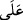
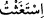
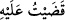
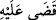

“
” cümlesi, “yardımla imdâd diledi” mânâsınadır. Bu nedenle “
” harf-i cerri
ile müteaddi olmuştur. Denilir ki: “
” yâni “Ben yardım taleb ettim.”
Kendi kavminden olan kimse düşmanı olana karşı Mûsâ’dan yardım istedi. Yani, Sıbtî
olan Kıptî’yi def etmek için ondan yardım istedi. Mûsâ (a.s.)’a Allah tarafından bir güç
ve kuvvet verilmişti. Kıptî’ye elini ondan çekmesini söyledi. Kıptî, Mûsâ’nın sözünü
dinlemedi.
“Mûsâ da ötekine bir yumruk vurup ölümüne sebep oldu.”
“
” kelimesinin okunuşu “
” kelimesi gibidir. İtmek, yumruğu ile vurmak ve
yaralamak mânâlarına gelir.
Mûsâ (a.s.) yumruğu ile vurunca, o da yumruk attı. Sonra Mûsâ (a.s.) ikinci kez daha
şiddetli vurunca Kıptî düşüp öldü. Mûsâ (a.s.) pişman oldu ve onu kumun içine gömdü.
Yapıp ettiğin ve bitirdiğin her şey için “
(Onu bitirdim, îfâ ettim, yerine
getirdim) denir.
el-Müfredât’ta der ki:
fiili ile “ölmek” tâbir olunur. Denilir ki: “Adağını
yerine getirdi, öldü, şehit oluncaya kadar savaştı” (el-Ahzâb, 33/23). Çünkü o bu
dünyada kendisine tahsis edilen işini hall ü fasl etti, bitirdi. “
(kazâ)” ifâdesi,
“yerine getirmek, îfâ etmek, kazâ etmek” mânâlarına gelir.
“(Bunun üzerine:) Bu” yâni öldürme “şeytan işidir. O” yâni şeytan, “gerçekten
saptırıcı,” Âdemoğlu için “apaçık bir düşman, dedi.” Yâni şeytanın iğvâ ettiği
kimsenin fiilidir, benim gibilerin değil.
Amelin şeytana izâfe edilmesi, onun iğvâ ve vesvesesi ile olduğu içindir. Çünkü o,
kâfirleri öldürmekle emrolunmamıştı. Yahud da Mûsâ (a.s.) onların arasında güvenilir
bir kimse idi ve onlara hile yapması ve pusu kurması mümkün değildi. Bu iş, fiilen bir
hatâ olduğu için Mûsâ (a.s.)’ın ismet sıfatına bir zarar getirmez. O bunu şeytanın
amelinden saymış ve onu zulüm olarak isimlendirmiştir. Aslında bu hatâ olduğu için
küçük günahlardan olmuş olsa da, Mûsâ (a.s.), Allah Teâlâ’ya karşı nefsinde bunu
büyük bir hatâ görerek tevbe-i istiğfar etmiştir. Nitekim böyle bir davranış da mukarreb
kulların bir âdeti ve sünnetidir. Ve yine bu hâdise Mûsâ (a.s.)’ın peygamberliğinden
önce vukû bulmuş idi.